Market Trends
DRAM Prices for 3Q21 Projected to Undergo Minor QoQ Increase of 3-8% Owing to Rising Demand from Peak Season(TrendForce 2021-07-13)
As third quarters have typically been peak seasons for the production of various end-products, the sufficiency ratio of DRAM is expected to undergo a further decrease in 3Q21, according to TrendForce’s latest investigations. However, DRAM buyers are now carrying a relatively high DRAM inventory due to their amplified purchases of electronic components in 1H21. The QoQ increase in DRAM contract prices are hence expected to slightly narrow from 18-23% in 2Q21 to 3-8% in 3Q21. Looking ahead to 4Q21, TrendForce believes that DRAM supply will continue to rise, thereby leading to either a further narrowing of price hikes or pressure constraining the potential price hike of DRAM products.
PC DRAM prices are expected to rise by 3-8% QoQ due to continued constraints on production capacities
……
QoQ increase in server DRAM prices for 3Q21 are expected to narrow to 5-10% due to buyers carrying a relatively high inventory
……
Mobile DRAM prices are expected to defy market realities and increase by 5-15% QoQ, with potential risks of high price and low demand
……
Graphics DRAM prices are expected to increase by 8-13% QoQ due to tight supply of GDDR6
……
Consumer DRAM prices are expected to increase by up to 13% QoQ in light of strong demand
……
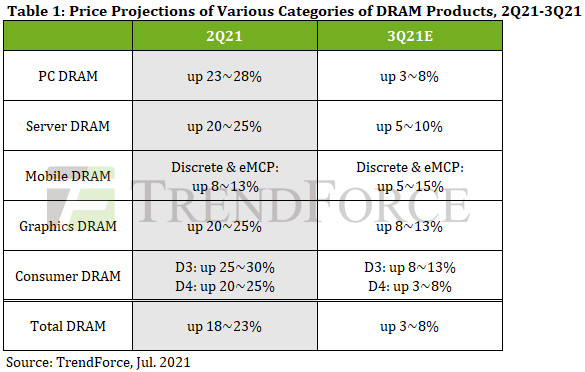
旺季效应刺激需求增温，第三季存储器价格小幅上涨3~8%(集邦咨询 2021-07-13)
根据TrendForce集邦咨询最新调查显示，由于第三季属各终端产品的生产旺季，有助于DRAM的Sufficiency Ratio进一步降低。然而，由于买方在今年上半年对各电子元件的购买量大增，导致整体DRAM库存水位偏高，预估第三季DRAM合约价涨幅将因此由上季的18~23%，收敛至3~8%。展望第四季，TrendForce集邦咨询认为，由于DRAM供给将持续上升，预估价格涨幅会更进一步收敛，或将造成价格上涨的压力。
产能持续受排挤，PC DRAM价格季涨3~8%
……
采购端库存仍高，Server DRAM第三季涨幅收敛至5~10%
……
Mobile DRAM季涨5~15%背离市况，恐出现有价无市情形
……
GDDR6供给吃紧所致，Graphics DRAM价格季增8~13%
……
Consumer DRAM需求强劲，单季涨幅最高达13%
……
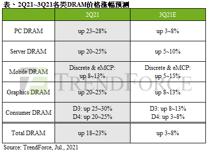
Sudden Drop in Cryptocurrency Prices Hurts Graphics DRAM Market in 3Q21 (TrendForce 2021-08-02)
The stay-at-home economy remains robust due to the ongoing COVID-19 pandemic, so the sales of gaming products such as game consoles and the demand for related components are being kept at a decent level, according to TrendForce’s latest investigations. However, the values of cryptocurrencies have plummeted in the past two months because of active interventions from many governments, with the graphics DRAM market entering into a bearish turn in 3Q21 as a result. While graphics DRAM prices in the spot market will likely show the most severe fluctuations, contract prices of graphics DRAM are expected to increase by 10-15% QoQ in 3Q21 since DRAM suppliers still prioritize the production of server DRAM over other product categories, and the vast majority of graphics DRAM supply is still cornered by major purchasers.
It should be pointed out that, given the highly volatile nature of the graphics DRAM market, it is relatively normal for graphics DRAM prices to reverse course or undergo a more drastic fluctuation compared with other mainstream DRAM products. As such, should the cryptocurrency market remain bearish, and manufacturers of smartphones or PCs reduce their upcoming production volumes in light of the ongoing pandemic and component supply issues, graphics DRAM prices are unlikely to experience further increase in 4Q21. Instead, TrendForce expects prices in 4Q21 to largely hold flat compared to the third quarter.
Sudden drop in ETH prices led to plummeting GDDR5 and GDDR6 spot prices
……
Contract prices of graphics DRAM are expected to increase by nearly 15% for 3Q21 as graphics DRAM suppliers’ fulfillment rate remains relatively low
……
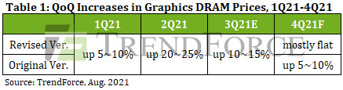
虚拟货币价格骤跌，削弱第三季Graphics DRAM整体市场动能(集邦咨询 2021-08-02)
根据TrendForce集邦咨询调查，目前电竞相关产品、游戏机及其零部件持续受惠于宅经济效应，整体需求维持稳健。然而，虚拟货币市场在多国政府介入下，致使过去两个月内价格骤跌，成为影响第三季graphics DRAM市场逐渐走弱的关键原因。其中，又以现货市场价格变动最为剧烈；然合约市场则在原厂优先生产server DRAM，加上大型买方仍掌握多数货源的情况下，进而带动第三季graphics DRAM合约价涨幅达10~15%。
展望第四季，由于graphics DRAM属于浅碟市场，价格可能突然反转或是涨跌幅相较主流产品更为剧烈。TrendForce集邦咨询认为，若虚拟货币价格持续疲弱不振，以及智能手机与PC随着疫情与长短料等问题使生产目标逐渐下修，则第四季graphics DRAM价格恐上涨不易，整体将与第三季大致持平。
以太币价格骤跌，GDDR5、GDDR6现货价大幅走跌
……
原厂供给达成率仍偏低，第三季合约价涨幅将近15%
……
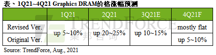
Vendor News
SK hynix begins mass production of DRAM with EUV technology(KoreaTimes 2021-07-12)
SK hynix has begun mass production of 10-nanometer DRAM chips using cutting-edge extreme ultraviolet (EUV) lithography technology as part of efforts to enhance its market competiveness, the company said Monday.
SK hynix the second Korean company to use EUV technology for DRAM manufacture after Samsung Electronics, which started using the method last August.
……
“We started mass production this month of 8-gigatibt LPDDR4 mobile DRAM based on fourth-generation 10-nanometer process technology,” the Korean chipmaker said.
It expressed hope the new technology will improve productivity and further boost cost competitiveness.
“The company expects 1anm technology to lead to a 25 percent increase in the number of DRAM chips produced from the same sized wafer, compared to the previous 1znm node. SK hynix anticipates that the 1anm DRAM will also likely help alleviate the supply-and-demand conditions of the global markets following a global increase in DRAM demand,” the firm said.
……
To further increase its competitiveness, the company added it plans to apply the EUV technology to next-generation chips called DDR5 DRAM starting early next year, to provide more reliable and sustained performance compared to DDR4 DRAM.
……
Samsung Electronics Announces Second Quarter 2021 Results(Samsung 2021-07-29)
Total consolidated revenue was KRW 63.67 trillion, a 20% increase from the previous year and a record for the second quarter. Operating profit increased 34% from the previous quarter to KRW 12.57 trillion as market conditions improved in the memory market, operations normalized at the Austin foundry fab, and as effective global supply chain management (SCM) helped maintain solid profitability for the finished product businesses.
The Semiconductor business saw a significant improvement in earnings as memory shipments exceeded previous guidance and price increases were higher than expected, while the Company strengthened its cost competitiveness. For the Display Panel Business, a one-off gain and an increase in overall prices boosted profits.
……
Micron D1α, The Most Advanced Node Yet On DRAM(SemiEngineering 2021-07-22)
Finally, we got to see D1α DRAM generation! It’s 14nm! After a quick viewing of the Micron D1α die (die markings: Z41C) and its cell design, we have determined its actual technology node (design rule), in contrast to the claims of market literature. It is the most advanced technology node ever on DRAM, and it is the first sub-15nm cell integrated DRAM product.
The Micron Z41C die removed from MT40A1G8SA-062E:R (FBGA Code: D8BPJ) is the most advanced 8 Gb DDR4-3200 (data rate = 3200 MT/s) SDRAM with Micron’s D1α technology applied. Micron described it as 40% improvement in density vs. D1z with ~10% driven by design efficiency.
……
D1α die size is 25.41 mm2, and bit density is 0.315 Gb/mm2, which is the industry’s highest DRAM density to date. In comparison, previous D1z DDR4 DRAM dies have 0.299 Gb/mm2 (Samsung 8 Gb Non-EUVL D1z DDR4), 0.247 Gb/mm2 (Micron 16 Gb D1z DDR4), and 0.296 Gb/mm2 (SK Hynix 16 Gb D1z DDR4 C-die), which means Micron has increased bit density by ~28% from the D1z.
……
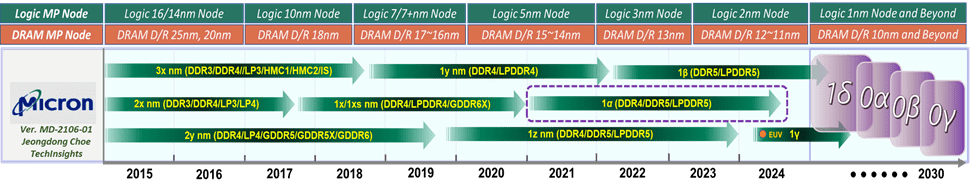
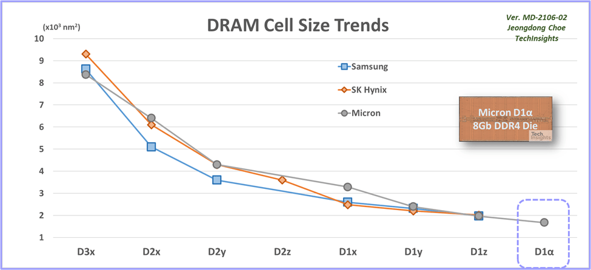
实力认可：金泰克实验室荣获CNAS国家认可委员会权威认证！(全球半导体观察 2021-07-13)
日前，深圳市金泰克半导体有限公司实验室通过CNAS（中国合格评定国家认可委员会）综合评审，正式获得实验室国家认可证书。
这标志着金泰克的硬件设施、研发水平和生产能力均达到了国际认可的准则要求，金泰克实验室更是一举跻身国家认可实验室的行列，这是对金泰克十余年来聚焦存储、深耕细作的充分肯定。
CNAS是中国合格评定国家认可委员会的英文缩写，是经国家认证认可监督管理委员会（CNCA）批准设立并授权的目前国内唯一一家有资格颁发国家认可实验室的机构，也是我国当前最具权威性的实验室评审机构。由于等效采用国际通用标准，其认证结果受国际互认，所以认可门槛很高，不仅审核周期长、通过难度大，认证过程相当严苛。
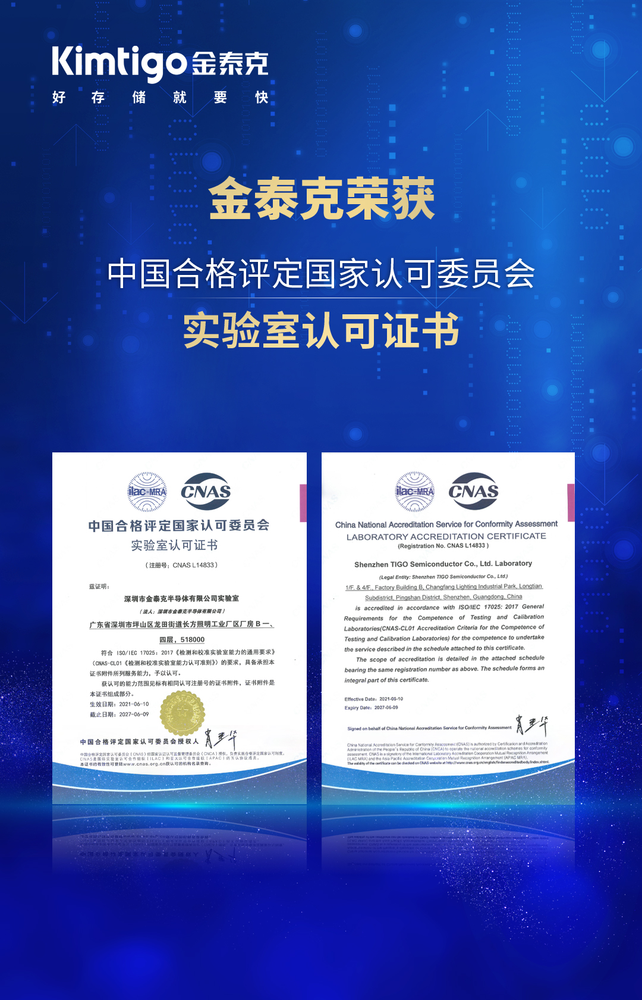
New Technology
HBM会替代DDR，成为计算机内存吗？(EET电子工程 2021-07-01)
……
就HBM常见的形态来看，它通常以从表面看起来几颗die(package)的方式存在，和主芯片(如CPU、GPU)靠得很近，一般就挨着主芯片。比如像上面这张图，A64FX就长这样，周围的那4颗package都是HBM内存。这样的存在形态，与一般的DDR内存就存在着比较大的区别。
HBM的特点之一，也是以相比DDR/GDDR更小的尺寸、更高的效率(部分)实现更高的传输带宽。而且实际上每个HBM封装内部是叠了好多层DRAM die的，所以也是个3D结构;DRAM die之间以TSV(硅通孔)和microbump连接;除了堆叠的DRAM die以外，下层会有个HBM控制器逻辑die。然后最下层通过base die(比如说硅中介silicon interposer)，来与CPU/GPU等互联。
……
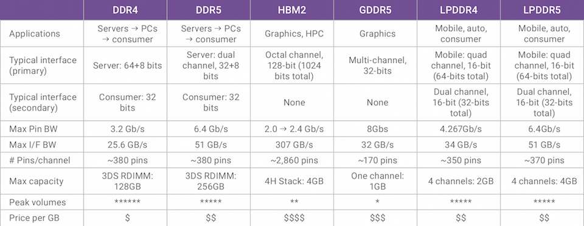
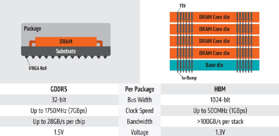
高端封装技术：攻克存储器系统性能和容量限制(半导体行业圈 2021-08-04)
…………
随着市场对高性能和高容量存储器产品的需求不断增加，从十年前开始，诸如重新分配层（RDL）¹、倒片封装（Flip Chip）²和硅穿孔（TSV）³等封装技术得到了积极广泛的应用【图1】。这些技术颠覆了传统的芯片级封装方法，在硅晶圆或芯片堆叠结构晶圆中进行工艺处理，大幅提高了产品的性能和容量。需要指出的是，SK海力士凭借业界领先的TSV堆叠技术引领市场发展，这其中包括高带宽存储器（HBM）封装存储器解决方案，以及用于服务器的高密度存储器（HDM）三维堆叠（3DS）技术【图2】。2016年，SK海力士率先应用批量回流焊（mass reflow）工艺⁴，将4块50 um厚芯片相互堆叠，并结合TSV堆叠技术，成功开发出一款服务器专用3DS存储器。近期，公司将这项技术应用于HBM产品的8层堆叠上。通过采用多个热假凸块作为散热路径，并使用具有优良导热性的塑封料作为间隙填充材料，SK海力士大大改善了因存储器带宽增加而引起的散热问题，同时也大幅降低了TSV的高昂制造成本。
…………
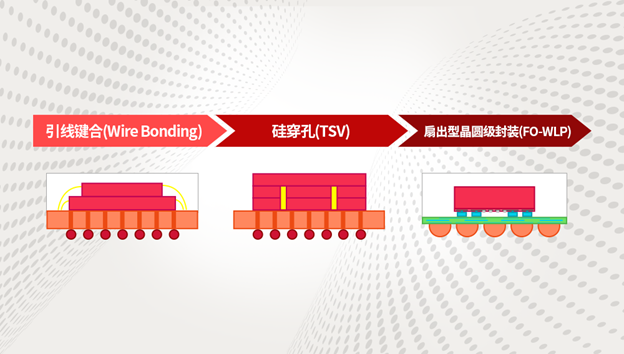
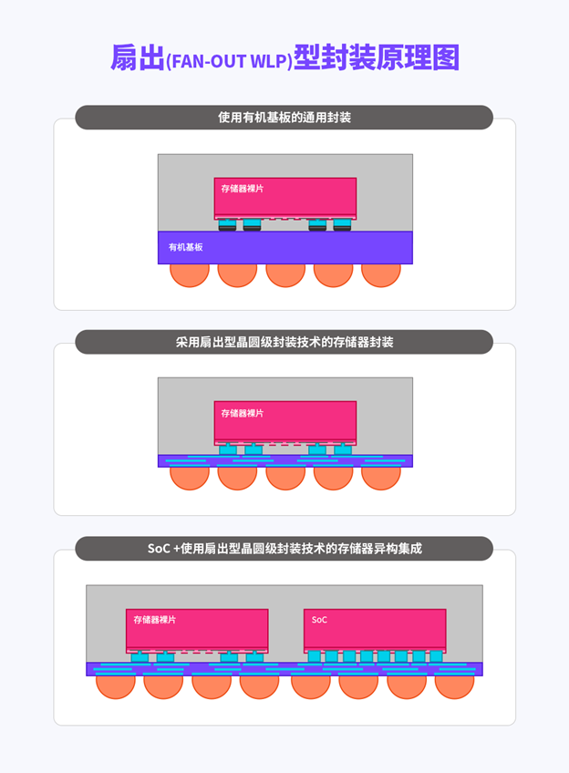